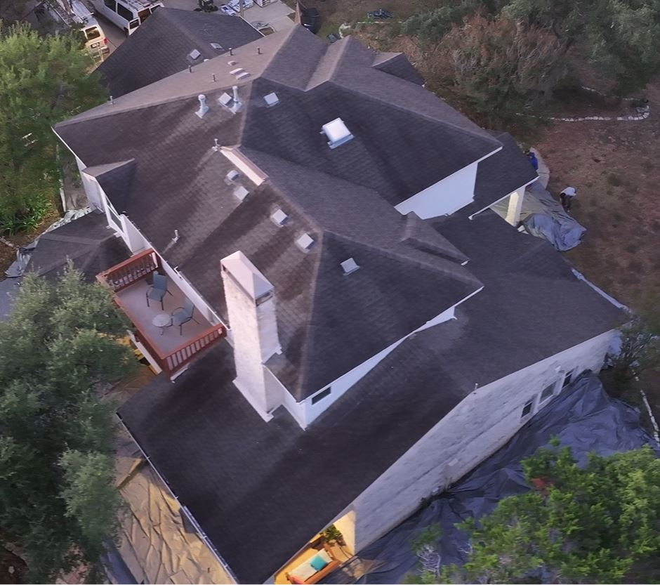
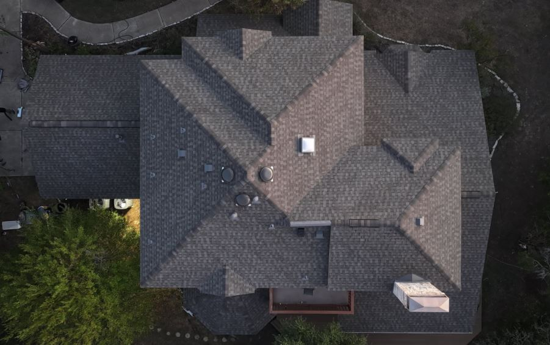

Case Study: Georgetown, Texas
Just outside Georgetown, tucked back on five quiet acres under a canopy of old oak trees, is a home that took a direct hit from a major storm earlier this year. The owner built it over 25 years ago and has no intention of leaving. Now in her early 70s and retired, she called us after noticing leaks above her kitchen and back porch.
During our inspection, we found significant storm damage throughout the roofing system. We helped her report it to her insurance carrier, who confirmed the damage and approved a full replacement.
That's when the real conversation started: what roofing system actually made sense for her?
"A good roofing project starts with understanding the homeowner's unqiue goals — not pushing the same system on every house.."
We Love Metal Roofs — But Not for Every Situation
We'll be upfront: we recommend premium metal roofing systems — stone coated steel, standing seam — for a lot of Central Texas homes. The durability and lifespan are hard to beat.
But a 50+ year roofing system didn't make the most sense here. She's in her seventies, and realisitically only needs her roof to last 20-25 good years. She's not trying to maximize resale value. The property sits well off the road, and is surrounded by trees, so curb appeal from the street wasn't really a factor. Plus, the budget needed to work for retirement.
What she was actually looking for came down to four things:
- ✓ Strong hail protection she could count on
- ✓ A realistic 20-25 year lifespan
- ✓ Minimal maintenance concerns going forward
- ✓ A price point that made sense given her situation
Given those priorities, a premium Class 4 impact resistant shingle system was the right call — not a consolation prize, but a genuinely better fit for the way she lives.
Why Class 4 Impact Resistant Shingles Make Sense in Central Texas
Hail damage is one of the most common reasons Central Texas homeowners end up replacing roofs years ahead of schedule. Standard shingles take a beating in this climate — constant UV exposure, heat, and storm cycles leave them progressively more vulnerable. By the time a moderate hail event rolls through, a roof that's only 10 or 12 years old can show granule loss, bruising, and early deterioration.
Class 4 shingles are engineered to handle that punishment better. They carry the highest impact resistance rating under the UL 2218 standard — meaning they've been tested to withstand a 2-inch steel ball dropped from 20 feet without cracking. In practice, that translates to meaningfully better performance in the kind of hail events we see in Williamson and Travis counties.
Key advantages for Texas homeowners:
- ✓ Better hail resistance than standard architectural shingles
- ✓ Lower likelihood of storm-related damage between replacement cycles
- ✓ Longer functional lifespan in Texas conditions
- ✓ Potential for significant insurance premium discounts
- ✓ Better long-term value relative to upfront cost
The Insurance Savings Math
Many Texas insurance carriers offer meaningful discounts for Class 4 rated roofs. Here's what that typically looks like:
Savings vary by carrier, home value, and policy. Always confirm discounts with your insurer after installation.
That means the upgrade cost can often pay for itself in roughly five years through insurance savings alone — and then continue generating savings for the remaining life of the roof. When you stack that against better hail performance and fewer repair calls in between, it becomes one of the more financially sound roofing decisions a Texas homeowner can make.
Class 4 Shingles vs. Metal Roofing: Which Is Right for You?
The honest answer is that both are solid choices for Central Texas — they just serve different needs. Here's how they compare across the factors that matter most:
| Factor | Class 4 Shingles | Metal (Stone Coated / Standing Seam) |
|---|---|---|
| Lifespan | 20-30 years | 50+ years |
| Hail Resistance | Strong | Exceptional |
| Upfront Cost | Moderate | Higher |
| Insurance & Energy Efficiency Savings | Verstera clients' average ~$300–$600/yr | Versetera clients' average ~$600-$1,200/yr |
| Maintenance | Medium/Low | Very low |
| Best For | Homeowners with 20-30 yr horizon | Long-term / energy & insurance savings / curb appeal |
For this homeowner, the math was clear. A metal system didn't make sense for her budget and timeline. Class 4 asphalt shingles hit every target she actually had.
What She Really Wanted Was to Stop Worrying About Her Roof
We hear this a lot from long-term homeowners across Central Texas, especially retirees: they don't want to think about their roof again for a long time. That's not an unreasonable thing to want. Roof replacements carry a lot of anxiety — insurance claims, contractor decisions, storm season, wondering if you made the right call.
So instead of pushing a one-size-fits-all sales pitch for metal roofing (although we do love metal for many Texas homes), we focused on simplifying the decision and helping her understand the real-world pros and cons of each roofing option:
- ✓ What lifespan she could realistically expect from each option
- ✓ How each system performs in Central Texas hail events
- ✓ What maintenance would look like year over year
- ✓ What the long-term cost picture actually looked like
By the time we were done, she wasn't just agreeing to a recommendation — she understood exactly why it was the right fit. That confidence matters. A homeowner who understands their roof makes better decisions when the next storm rolls through.
Before & After

Storm-damaged roof prior to replacement
Even though curb appeal wasn't a priority going in, the transformation was noticeable. The new roof brought cleaner rooflines, richer dimensional texture, and the overall feel of a well-maintained property. But more than the appearance, it gave her something simpler: confidence that her home is protected for the years ahead.

Completed Class 4 impact resistant shingle installation
See the finished roof:
The Right Roof Isn't Always the Most Expensive One
There's a persistent assumption in roofing that a higher-end system is always the smarter investment. Sometimes it is. A middle-aged family planning to stay in a home for 30+ years, in a high-hail zone, who wants to never think about roofing again — metal probably makes a lot of sense.
But roofing decisions should be based on your actual situation: your timeline, your budget, your property, and what you're genuinely trying to accomplish. For this Georgetown homeowner, a premium Class 4 shingle system was the right answer — not because it was the cheapest option available, but because it matched every goal she had without asking her to pay for things she didn't need.
That's the kind of roofing conversation we try to have with every homeowner in Central Texas.
Frequently Asked Questions
Class 4 is the highest impact resistance rating for asphalt shingles under the UL 2218 standard. To earn it, a shingle must withstand a 2-inch steel ball dropped from 20 feet without cracking. In practice, that means significantly better performance against the kind of hail events Central Texas sees compared to standard architectural shingles.
Most Verstera clients see annual insurance premium discounts of $300–$600 after upgrading to a Class 4 impact resistant shingle roof. The exact amount depends on your carrier, home value, and current policy. At that savings rate, the upgrade cost often pays for itself within approximately five years — and the savings continue for the life of the roof.
Premium Class 4 shingles typically carry 30-year manufacturer warranties, with a realistic functional lifespan of 20-30 years in Central Texas conditions. Actual lifespan depends on installation quality, attic ventilation, and how many major storm events the roof endures over time.
Both are strong options for Texas homes — they serve different situations. Metal roofing (stone coated steel or standing seam) offers a 50+ year lifespan and the best long-term performance, but at a higher upfront cost. Class 4 shingles still offer excellent hail protection and a 20-30 year lifespan at a lower price point. The right choice depends on your timeline, budget, and long-term goals — not which option sounds more impressive.
Yes — many Texas insurance carriers offer a discount for Class 4 rated roofing systems. You'll need to request the discount and provide proof of installation to your insurer. Savings typically fall in the $300–$600 annual range for Class 4 shingle roofs, though this varies by carrier and policy. It's worth calling your insurer before installation to confirm whether they offer the discount and how to document it.
For most Central Texas homeowners, yes. The region sees frequent hail, strong UV, and high wind events that wear standard shingles down faster than in other parts of the country. Class 4 shingles hold up better under those conditions, last longer, and often recoup a significant portion of the upgrade cost through insurance savings. For homeowners who plan to stay in their home for at least 10 years, the upgrade typically makes financial and practical sense.
Not Sure Which Roof Is Right for Your Home?
We work with homeowners all across Central Texas — Georgetown, Round Rock, Cedar Park, Leander, and Austin. If you're weighing Class 4 shingles, metal, or anything in between, we're happy to walk you through the real-world pros and cons for your specific situation — no sales pressure, just straight answers.
Request a Free Roof Consultation